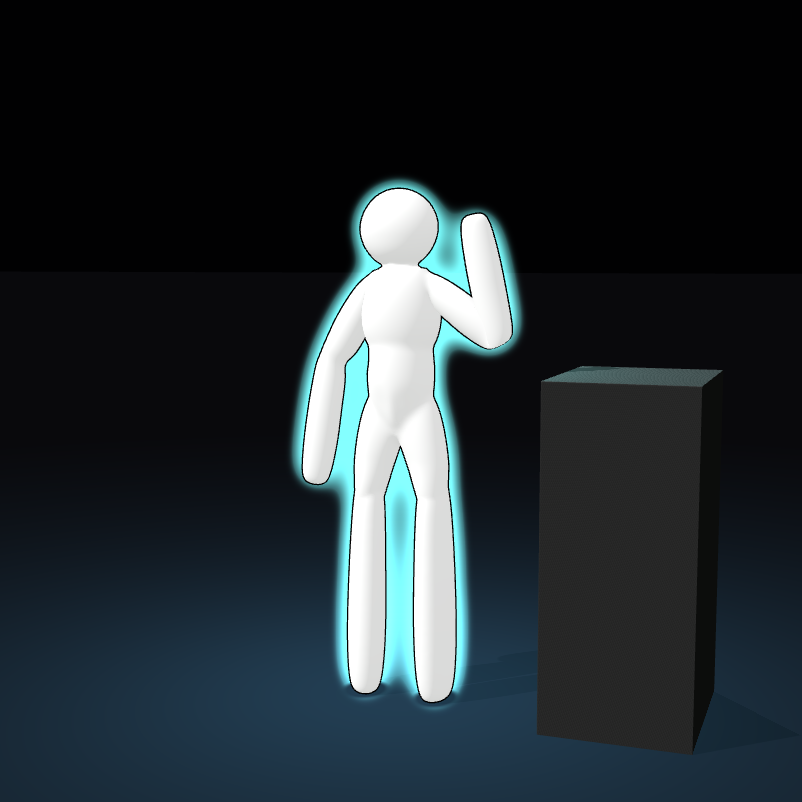
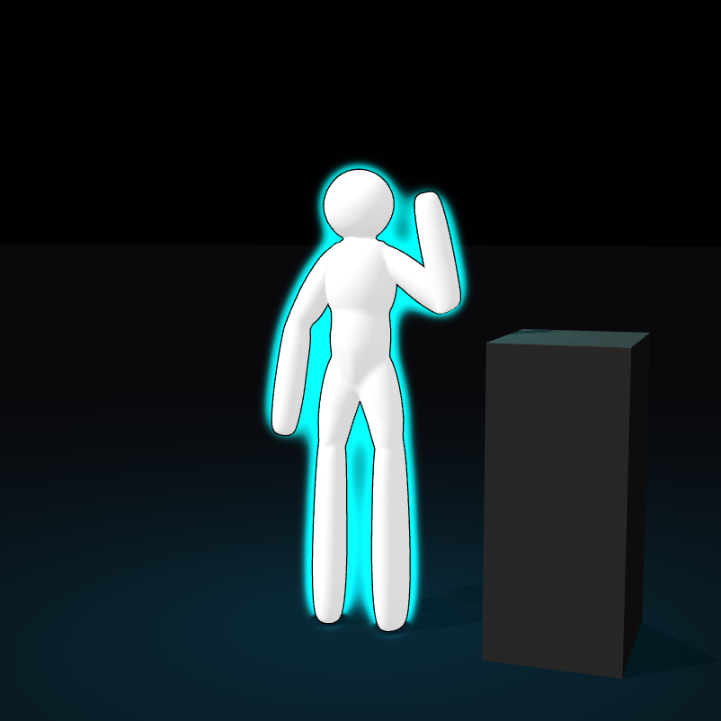
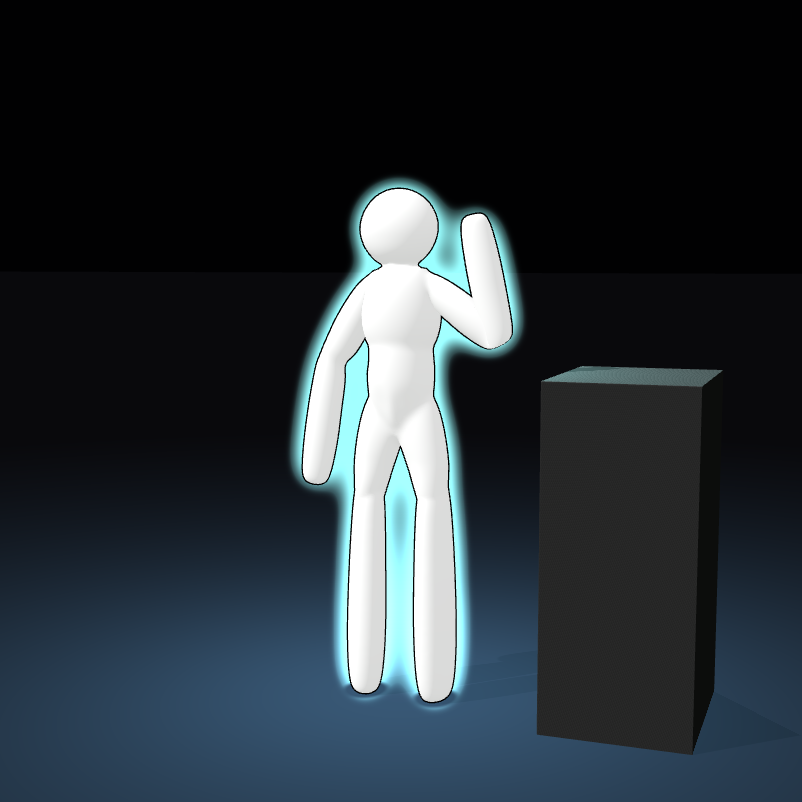

Trip · Saturation and lightness
Three static comparisons using the same cyan hue and independent white body.

Cyan · saturation 35%, lightness 50%White body · black outline · grounded feet
Cyan · saturation 100%, lightness 20%White body · black outline · grounded feet
Cyan · saturation 100%, lightness 80%White body · black outline · grounded feet